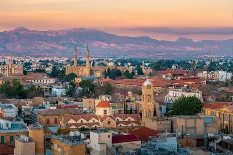

Город Никосия

Никосия – единственная в своем роде столица сразу двух государств – Республики Кипр и Турецкой Республики Северного Кипра. Являясь по сути крупнейшим городом острова и его административным центром, Никосия несколько проигрывает остальным курортам страны по популярности из-за своей удаленности от морского побережья. Однако отсутствие насыщенной пляжной жизни и сумасшедших вечеринок с лихвой компенсируется историческим наследием столицы. За более чем 3000 лет официального существования город накопил такое количество исторических памятников и музейных артефактов, что давно превратился в «лавку древностей под открытым небом». В плане насыщенности экскурсионной программы Никосия даст фору большинству кипрских курортов, где, чтобы увидеть что-то по-настоящему интересное, почти всегда нужно выезжать за пределы городской черты. Ну а экспозициям местного археологического музея уже не один десяток лет завидуют лучшие галереи и коллекционеры Европы. Богатое на события прошлое не могло не сказаться и на облике столицы Кипра, поэтому пресловутая мультикультурность здесь прослеживается даже в архитектурных мотивах – чего только стоят христианские храмы, переоборудованные в мусульманские мечети. Климат Никосии обусловлен ее необычным местоположением – это единственный из городов острова, не имеющий выхода к морю. Как результат: здесь заметно жарче и суше, чем, например, в Лимассоле или Ларнаке. Типичный для Кипра средиземноморский климат в столице утрачивает свои классические черты и начинает переходить в полупустынный, что ощущается уже в первые минуты пребывания. Самый правильный способ начать знакомство с Никосией – пробраться внутрь Старого города, окруженного массивными стенами фортификации, возведенной еще предприимчивыми венецианцами. Вход внутрь цитадели открывали и продолжают это делать Пафосские, Киренейские и Фамагусские ворота – мощные каменные укрепления в виде арок. Отправная точка маршрута по историческому центру – улица Ледра. Прогулка по этой необычайно уютной торговой зоне – уже само по себе маленькое путешествие в историю острова и его столицы. Старый город греческой части Никосии вообще богат на культовые постройки. Здесь можно посетить базилику Архангела Михаила Трипиотиса (иконостас внутри не менее впечатляющий, чем в Панагии Фанеромени), собор Святого Иоанна с его собранием древних фресок, а также старинный храм Панагия Хрисалиниотисса. Кроме того, в историческом центре находится комплекс Архиепископского дворца. Собственно, дворцовых зданий здесь два, но одно из них – настоящий памятник архитектуры, а второе – новодел в неовизантийском стиле. Совершить вояж в кипрский кусочек Турции путешественники могут, перейдя Зеленую линию. Архитектурных достопримечательностей в этой части Никосии чуть поменьше, но те, что имеются, западают в душу надолго. Обязательны к осмотру на турецкой стороне: караван-сарай Бюйюк-Хан (лавочки и мастерские ремесленников действуют по сей день) и мечеть Селимие, бывшая когда-то христианским кафедральным собором, но с приходом османов украшенная минаретами и превращенная в мусульманское святилище. Довольно необычный облик у мечети Хайдар-паши – горгульи с отбитыми головами и герб де Лузиньянов на фасаде уравновешиваются пристроенным сбоку минаретом. Главное преимущество шопинга в Никосии – более низкие цены в сравнении с курортными городами Кипра. При этом ассортимент отпускных сувениров и просто аутентичных вещей остается таким же. Самые «шопинговые» улицы города – Ледра, Онасагору и Макариос-авеню. На первой принято скупать символическую мелочевку, начиная от магнитиков и заканчивая местной керамикой. На второй – рассматривать витрины антикварных лавок, а на третьей – придирчиво изучать ассортимент брендовых бутиков «Версаче», «Фенди» и их фэшн-конкурентов.